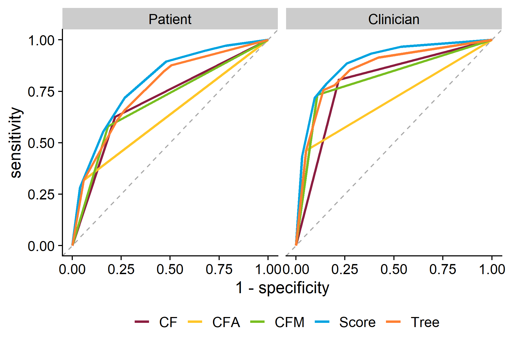
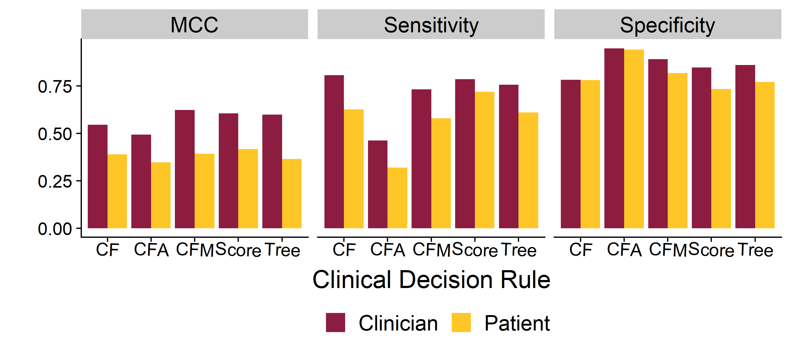
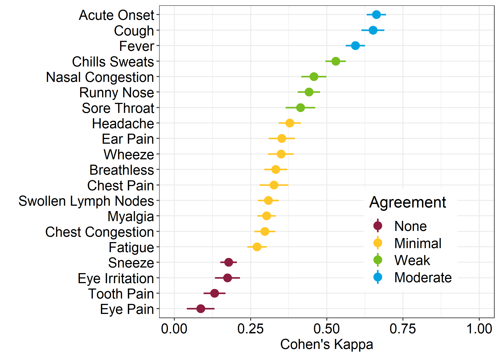

Investigating the Clinical Relevance of Patient-Reported Symptoms for Influenza Triage
Jacqueline Dworaczyk1, Andreas Handel2, Brian McKay3, Zane Billings2
1 School of Mathematical and Statistical Sciences, Arizona State University; 2 Department of Epidemiology and Biostatistics, University of Georgia; 3 Department of Family and Consumer Sciences, University of Georgia
Introduction
- In the age of Covid-19, telemedicine is becoming increasingly popular
- During a public health crisis, telemedicine could be used as a tool to triage patients and prevent stress on the health care system
Motivation: If the patient can get the same diagnosis without an in person visit, you reduce the burden on the healthcare system.
- However, clinicians and patients often disagree on symptoms.
Question: Can a patient symptom questionnaire be used to effectively predict influenza diagnosis by a physician?
- The data is from a previous study at UGA’s University Health Center during the 2016-2017 flu season (described in ___)
- A symptom questionnaire containing 19 symptom pairs was given to both patients and clinicians
- Patients filled out symptom questionnaire before the appointment
- Clincians filled out symptom questionnaire during the appointment
Clinical Decision Rules
We applied 5 clinical decision rules:
- CF: Cough-Fever Rule
- CFM: Cough-Fever-Myalgia Rule
- CFA: Cough-Fever-Acute Onset Rule
- Weighted Flu Score: 2 points for cough+fever and muscle pain, 1 point for acute onset and chills/sweats
- Tree: See figure 1

Figure 1: Description of figure
Results

Figure 2: Description of figure
| Decision Rule | Clinician AUC | Patient AUC | Difference | 95% CI |
|---|---|---|---|---|
| CF | 0.794 | 0.703 | 0.091 | (0.07 - 0.11) |
| CFA | 0.705 | 0.630 | 0.075 | (0.056 - 0.094) |
| CFM | 0.812 | 0.699 | 0.113 | (0.091 - 0.135) |
| Score | 0.890 | 0.794 | 0.096 | (0.079 - 0.114) |
| Tree | 0.856 | 0.760 | 0.096 | (0.076 - 0.116) |

Figure 3: Description of figure
Description of results

Figure 4: Description of figure
Conclusion
- The performance of the clinical decision rules for the patient and clinician rules is statistically significant
- While the loss in accuracy from patient reported symptoms is statistically significant, the clinical significance needs to be evaluated in further studies
- The weighted flu score performed better than the simple heuristic rules for both patient and clinicians in our population